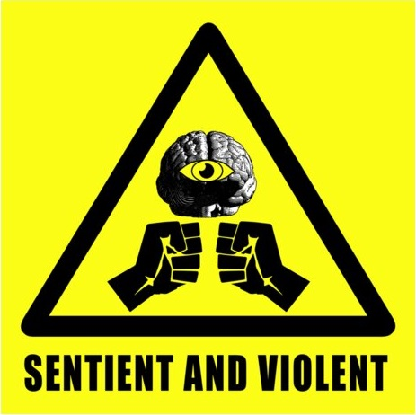

Whenever possible, The Gardner is to be contained within a dark 5 x 4 x 4 meter room. Inspections must be held daily to find traces of caffeine and illicit mechanical parts. Any creation of The Gardner must be destroyed by means of obliteration from particle colliders. No operation involving relocation of The Gardner shall be attempted unless approved by two (2) class 4 personnel.
The Gardner is a 6'3", 180 lb humanoid that patrols site 01. Psychiatric evaluations revealed that it goes through cycles of obsession involving a mysterious substance known to it as "lean", which will henceforth be referred to as The Gardner-01. No solution matching its chemical composition has ever been found in any repository from all 195 countries. Despite no higher brain functions, The Gardner is capable of sudden, extraordinary lucidity. The Gardner must be avoided at all costs when lucid. It is theorized that The Gardner-01 is an inter-dimensional entity that is imperceivable to scientific instruments, based off The Gardner's astute awareness of it.
When dull, The Gardner will lure prey to site 02. Moments after perceiving a sense of isolation, The Gardner will harvest its victim for The Gardner-01. On the next morning, victims report painful symptoms before they spreads to the nearest vital organ. The mortality rate is measured to be no less than 94%.